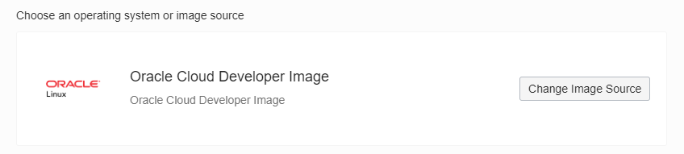
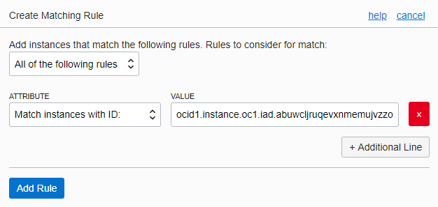
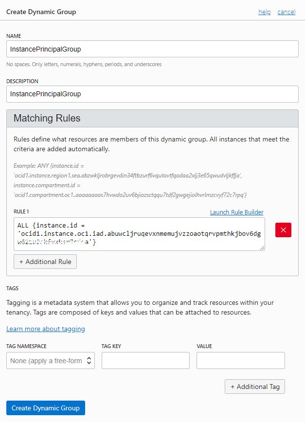
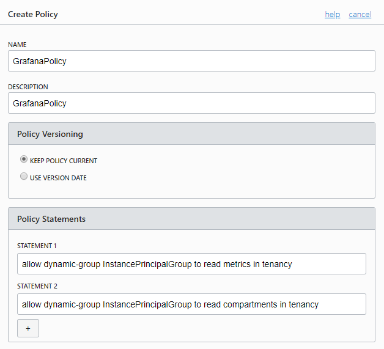
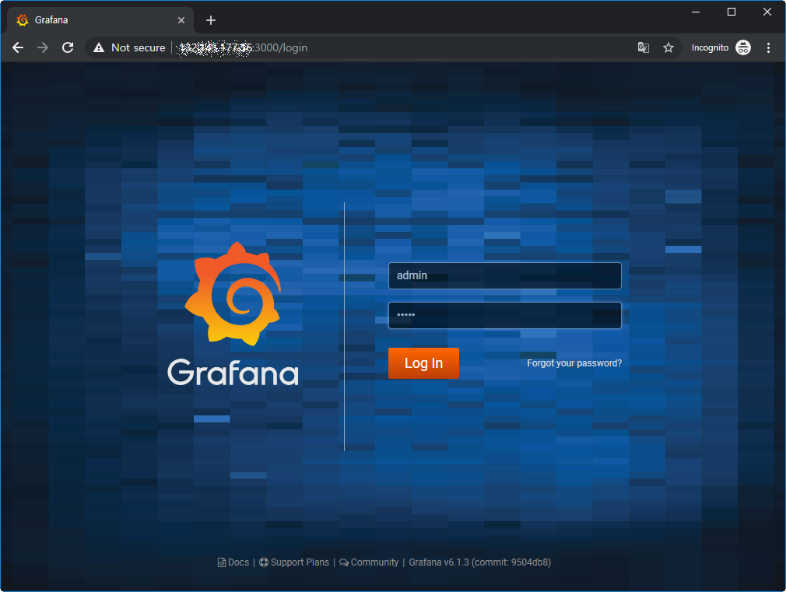

12.3.1 Compute VM에 Grafana 설치
Compute Instance 만들기
Compute Instance 생성 화면으로 이동합니다.
이미지 소스를 [Oracle Images] 목록에 있는 Oracle Cloud Developer Image 이미지로 선택합니다.
Oracle Cloud Developer Image는 OCI CLI 등 개발툴이 이미 설치되어 있습니다.
Compute 인스턴스를 생성합니다.
생성된 Compute 인스턴스의 OCID를 복사해 둡니다.
OCI CLI - Instance Principal 설정
Compute 인스턴스에서 추가 인증없이 OCI API를 사용하기 위해서는 Instance Principal을 설정해야 합니다. 그 절차는 Compute 인스턴스를 Dynamic Group에 추가하고 해당 Group에 권한을 주는 방식입니다.
Dynamic Group 설정
OCI 콘솔에서 내비게이션 메뉴를 엽니다. [Governance and Administration] >> [Identity] >> [Dynamic Groups]로 이동합니다.
[Create Dynamic Groups]을 클릭합니다.
Launch Rule Builder를 클릭하여 룰을 추가합니다.
- ATTRIBUTE: Match instances with ID
- VALUE: 복사해둔 Compute 인스턴스의 OCID

NAME, DESCRIPTION을 입력하여 Dynamic Group을 생성합니다.

Policy 설정
[Identity] >> [Policies]로 이동합니다.
[Create Policy]을 클릭합니다.
다음 두 권한을 가지는 Policy를 생성합니다.
allow <subject> to read metrics in tenancy allow <subject> to read compartments in tenancyPolicy 생성화면

OCI CLI 접속 확인
SSH로 앞서 생성한 Compute 인스턴스로 접속합니다.
다음명령으로 Instance Principal 방식으로 접속합니다. OCI CLI config 파일을 설정하지 않았는데 접속되는 것을 확인 할 수 있습니다.
oci os ns get --auth instance_principal- 접속 예시
[opc@mygrafana ~]$ oci os ns get --auth instance_principal { "data": "thekoguryo" } [opc@mygrafana ~]$
Grafana 설치
Compute 인스턴스에 접속하여 다음 명령들을 순서대로 실행하여 Grafana를 설치합니다.
> wget https://dl.grafana.com/oss/release/grafana-6.1.3-1.x86_64.rpm > sudo yum localinstall grafana-6.1.3-1.x86_64.rpm > sudo systemctl start grafana-server > sudo grafana-cli plugins install oci-datasource > sudo firewall-cmd --permanent --add-port=3000/tcp > sudo firewall-cmd --reload > sudo systemctl restart grafana-server- 실행예시
[opc@mygrafana ~]$ wget https://dl.grafana.com/oss/release/grafana-6.1.3-1.x86_64.rpm --2019-04-10 01:34:18-- https://dl.grafana.com/oss/release/grafana-6.1.3-1.x86_64.rpm Resolving dl.grafana.com (dl.grafana.com)... 151.101.202.217, 2a04:4e42:2f::729 Connecting to dl.grafana.com (dl.grafana.com)|151.101.202.217|:443... connected. HTTP request sent, awaiting response... 200 OK Length: 56360446 (54M) [application/x-redhat-package-manager] Saving to: ‘grafana-6.1.3-1.x86_64.rpm’ 100%[===========================================================>] 56,360,446 87.4MB/s in 0.6s 2019-04-10 01:34:19 (87.4 MB/s) - ‘grafana-6.1.3-1.x86_64.rpm’ saved [56360446/56360446] [opc@mygrafana ~]$ sudo yum localinstall grafana-6.1.3-1.x86_64.rpm Loaded plugins: langpacks, priorities, ulninfo, versionlock Examining grafana-6.1.3-1.x86_64.rpm: grafana-6.1.3-1.x86_64 Marking grafana-6.1.3-1.x86_64.rpm to be installed Resolving Dependencies --> Running transaction check ---> Package grafana.x86_64 0:6.1.3-1 will be installed --> Finished Dependency Resolution Dependencies Resolved ===================================================================================================== Package Arch Version Repository Size ===================================================================================================== Installing: grafana x86_64 6.1.3-1 /grafana-6.1.3-1.x86_64 155 M Transaction Summary ===================================================================================================== Install 1 Package Total size: 155 M Installed size: 155 M Is this ok [y/d/N]: y Downloading packages: Running transaction check Running transaction test Transaction test succeeded Running transaction Installing : grafana-6.1.3-1.x86_64 1/1 ### NOT starting on installation, please execute the following statements to configure grafana to start automatically using systemd sudo /bin/systemctl daemon-reload sudo /bin/systemctl enable grafana-server.service ### You can start grafana-server by executing sudo /bin/systemctl start grafana-server.service POSTTRANS: Running script Verifying : grafana-6.1.3-1.x86_64 1/1 Installed: grafana.x86_64 0:6.1.3-1 Complete! [opc@mygrafana ~]$ sudo systemctl start grafana-server [opc@mygrafana ~]$ sudo grafana-cli plugins install oci-datasource installing oci-datasource @ 1.0.0 from url: https://grafana.com/api/plugins/oci-datasource/versions/1.0.0/download into: /var/lib/grafana/plugins ✔ Installed oci-datasource successfully Restart grafana after installing plugins . <service grafana-server restart> [opc@mygrafana ~]$ sudo firewall-cmd --permanent --add-port=3000/tcp success [opc@mygrafana ~]$ sudo firewall-cmd --reload success [opc@mygrafana ~]$ sudo systemctl restart grafana-server [opc@mygrafana ~]$Grafana 로그인
Grafana가 설치된 Compute 인스턴스에 3000포트로 접속합니다. 기본 접속 계정은 admin/admin 입니다.

참고 사이트
- https://grafana.com/blog/2019/02/25/oracle-cloud-infrastructure-as-a-data-source-for-grafana/
- https://blogs.oracle.com/cloudnative/data-source-grafana
** 이 글은 개인으로서, 개인의 시간을 할애하여 작성된 글입니다. 글의 내용에 오류가 있을 수 있으며, 글 속의 의견은 개인적인 의견입니다. **